Design
Website
경제교육은 세뱃돈에서부터!
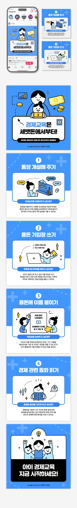
카드뉴스 - 경제교육은 세벳돈에서부터!
- Card News
- Illustration
코카콜라 타프
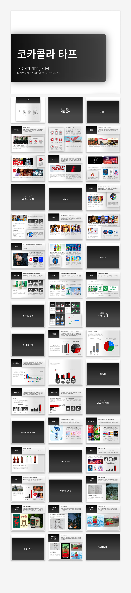

리서치/PPT디자인 - 코카콜라 타프
- PPT Design
- Research
- Illustration
- Photoshop
캐릭터 디자인 - SMILE
캐릭터 디자인 - SMILE
- Character Design
- Illustrator
2014년 제3회 대구출판인쇄 디자인 공모전
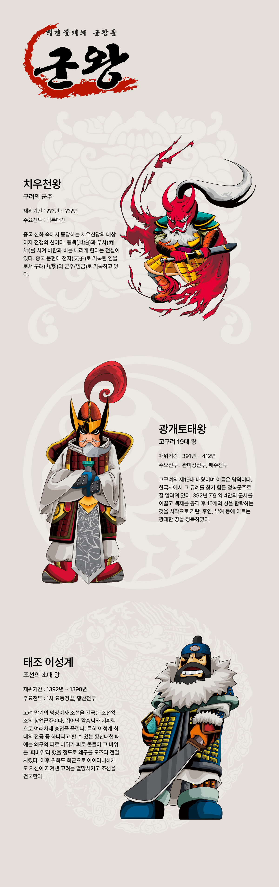
캐릭터디자인 - 군왕
- Character Design
- Illustration
- Photoshop
즈지스와프 벡신스키 전시회 리플렛 디자인
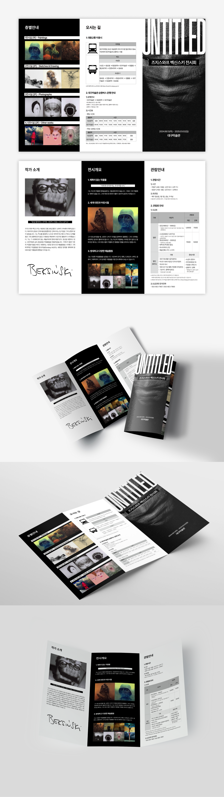
리플렛 - 즈지스와프 벡신스키 전시회
- Editorial design
- Illustrator
- InDesign
- Photoshop
짜슐랭 상세페이지 디자인
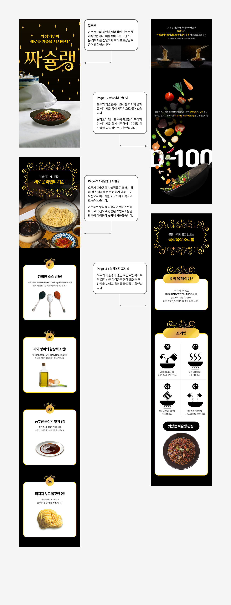
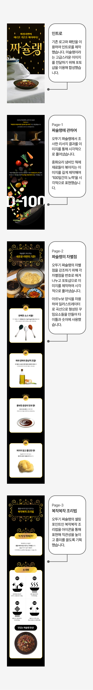
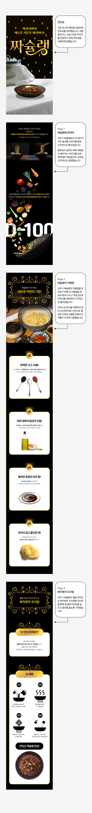
2015 머드쉐이크 캐릭터 공모전
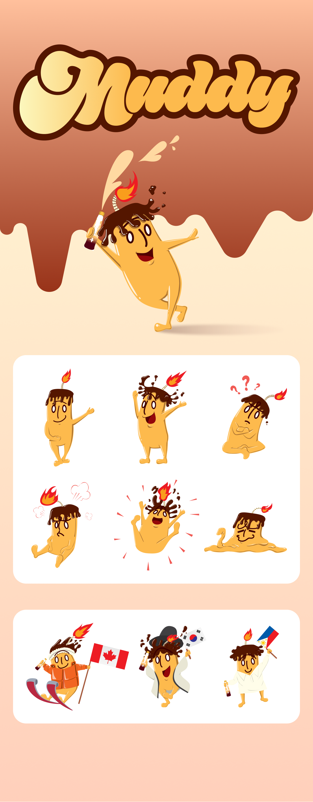
캐릭터 디자인 - Muddy
- Character Design
- Illustration
단원 김홍도 풍속도첩 캐릭터 디자인
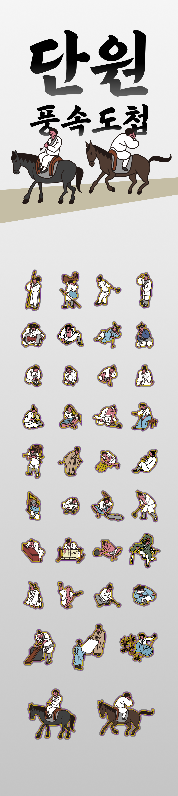
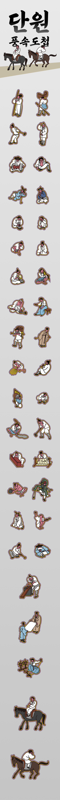
캐릭터 디자인 - 단원 김홍도 풍속도첩
- Character Design
- Illustrator
오뚜기몰 메인페이지 반응형 웹사이트
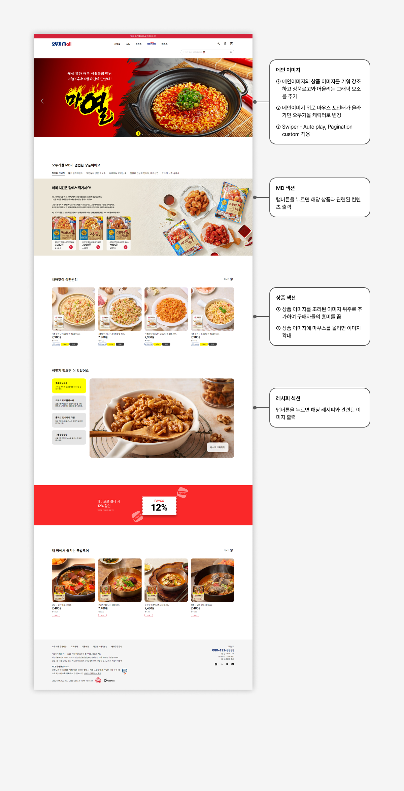
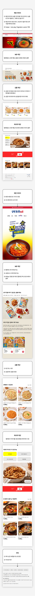
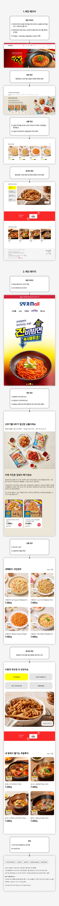
동아제약 홈페이지 리디자인
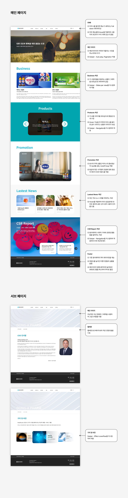
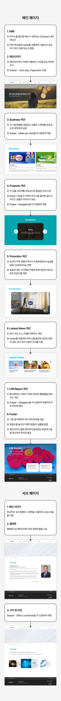
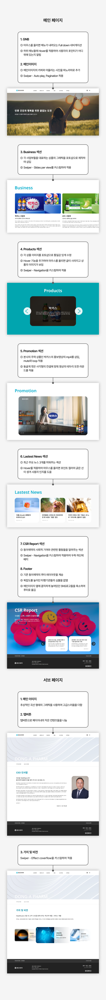
주류 구매어플 달리
다함 닭갈비 로고 리디자인

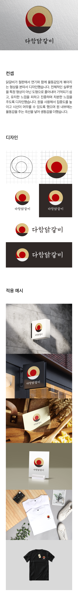
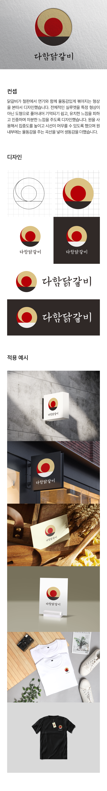
로고 디자인 - 다함닭갈비
- Logo Design
- Illustration
2019 대한민국 헌혈 공모전 - 유일한 슈퍼파워


웹툰 - 유일한 슈퍼파워
- Webtoon
- Illustrator
- Photoshop
서울일러스트레이션페어 - 세기말식객


ComfyUI - KREA2 이미지 생성

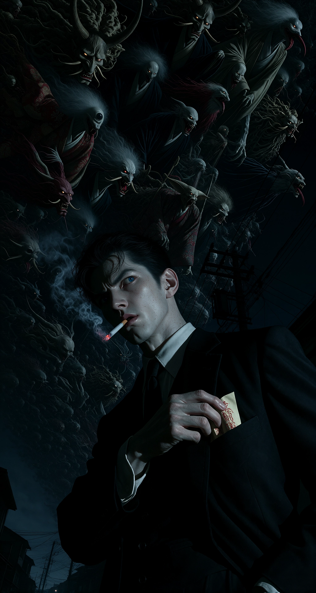
백귀야행(百鬼夜行)
Description
한국에는 귀신날이 있고, 서양에는 와일드 헌트라는 개념이 있습니다. 귀신이나 요괴들이 떼를 지어 다니며 사람들에게 해를 끼치는 날 또는 현상이기 때문에 그날은 외출을 금해야하는 날입니다. 일본에도 백귀야행(百鬼夜行)이라는 개념이 있으며 고전인 《슈가쇼》라는 백과사전을 보면 정월, 2월 첫 자일(子日), 3월·4월의 오일(午日), 5월·6월의 사일(巳日), 7월·8월의 술일(戌日), 9월·10월의 미일(未日), 11월·12월의 진일(辰日)은 백귀야행이 출현하는 〈백귀야행일〉이며, 백귀야행과 만나면 죽기 때문에 이 날 밤에는 외출하지 않았다고 합니다. 해당 이미지는 현대 일본에 백귀야행 현상이 일어나고 그 현상 가운데 퇴마사가 서있는 모습을 그려냈습니다. 서양의 와일드 헌트에서 하늘을 달리는 귀신떼를 쳐다보면 잡혀간다는 전설에 영감을 얻어 하늘 위를 내달리는 일본의 요괴/귀신떼를 묘사했습니다.
m1V8. ArsMJStyle, Colored pencil hyperdetailed realism. A strikingly handsome young adult Japanese exorcist with the delicate, refined appearance of a Japanese bishounen stands alone on a deserted Japanese city street at midnight, captured in a dynamic extreme low-angle three-quarter profile portrait from a camera positioned very low below him and looking steeply upward. He dominates the frame from the front waist belt upward to the top of his head, with strong perspective depth and pronounced foreshortening. His head is tilted slightly toward an unseen presence outside the frame, while his narrowed eyes with blue pupils remain fixed in that direction. He has very pale skin, blue pupils, and neatly swept-back black hair in a Regent hairstyle. He wears a black suit over a crisp white dress shirt and a black necktie. His right hand hangs naturally beside his torso and does not touch the necktie. His left hand reaches naturally across his body toward the opposite side of his chest. His left hand enters beneath the right lapel of his suit jacket and reaches into the hidden interior breast pocket inside the jacket. This is a small internal breast pocket completely inside the jacket, with no exterior pocket and no lower front pocket. His left fingers are positioned inside the pocket, delicately pinching a single small yellow paper talisman and drawing it out. The talisman is a compact, narrow rectangular paper slip, not a long hanging strip. Only the small upper end of the talisman is visible between his fingertips and the jacket opening. The visible paper remains close to his fingertips and the pocket opening, with no long section extending out of the pocket. Nothing hangs downward from the pocket. No long paper strip emerges from the jacket. The talisman does not trail downward, drape over the jacket, or extend along his torso. It remains a small, compact piece of paper being lifted directly upward by his fingers, with only a short portion visible outside the pocket. The paper bears small red kanji characters. A cigarette is held between his front teeth. His lips are slightly parted, his teeth visibly gripping the cigarette, and his mouth forms a tense irritated grimace. The ember glows orange and a thin trail of smoke rises into the darkness. His brow is deeply furrowed, his eyes narrowed with blue pupils, and his expression is a severe, irritated grimace as he prepares to confront the unseen ghost. He looks like a veteran exorcist who has encountered a spirit during a solitary walk and is calmly preparing himself for the fight. The scene takes place in the deepest hours of midnight beneath a completely dark blue-black sky. The extreme low-angle viewpoint shows almost nothing except the sky above him. The entire visible sky is overwhelmed by an enormous, extraordinarily dense Japanese Hyakki Yagyo, a Night Parade of One Hundred Demons racing across the heavens. The yokai procession is so vast and densely packed that the night sky is almost completely obscured by the creatures. There is virtually no empty sky between them. Countless yokai fill the entire upper background from edge to edge, forming a continuous, crowded supernatural mass that stretches far beyond the frame in both directions. The procession is composed of hundreds upon hundreds of individually recognizable Japanese yokai packed directly against one another. Horned oni, tengu, grotesque humanoid spirits, strange animal-like yokai, one-eyed creatures, long-haired female spirits, elongated monsters, multi-limbed beings, and numerous tsukumogami transformed from umbrellas, lanterns, instruments, tools, household objects, and other everyday objects all race together in one immense Japanese supernatural procession. Their bodies overlap heavily and occupy multiple depths, with nearer creatures partially obscuring creatures behind them and countless smaller creatures continuing into the extreme distance. The density is extreme: heads, faces, arms, legs, wings, horns, tails, robes, limbs, and strange supernatural bodies fill nearly every visible portion of the sky. The creatures are close enough together that their individual forms frequently overlap, producing a huge layered mass of moving yokai. Only tiny irregular gaps of dark sky remain between portions of the horde, and large uninterrupted areas of empty sky are absent. Every yokai follows one shared direction of travel across the heavens. Their heads, faces, chests, bodies, legs, wings, tails, and flowing clothing are oriented along the procession's forward direction. They do not look toward the exorcist. They are seen primarily in side profile, three-quarter profile, or rear three-quarter view as they rush along their own path across the sky. Their faces and bodies are oriented according to their movement rather than toward the man below. The procession creates overwhelming directional motion and depth. Some yokai sprint through the air, others leap, fly, crawl, bound, tumble, or surge forward, while wings beat and robes, hair, tails, and loose objects stream backward from their movement. Multiple layers of creatures rush along the same route at different distances, producing a vast sense of perspective and an apparently endless supernatural parade extending beyond the edges of the image. The yokai remain individually recognizable despite the extreme density. Their faces show grotesque grins, snarls, wild eyes, exaggerated laughter, fierce expressions, and strange mischievous expressions. The horde reads immediately as an enormous multitude of Japanese yokai in a traditional Hyakki Yagyo, not as clouds, smoke, birds, abstract shadows, or an indistinct dark mass. The exorcist's gaze remains completely independent from the procession. He looks toward a separate unseen presence outside the frame while the entire Hyakki Yagyo continues racing across the sky in its own direction. The man's attention and the yokai's movement form two separate visual directions. The entire Hyakki Yagyo remains high in the sky above and behind the exorcist. No yokai appear on the street, beside him, or at ground level. Dark utility poles and overhead power lines cross only a small lower portion of the sky beneath the immense procession, partially silhouetted against the enormous moving horde. The street remains almost completely outside the upward field of view, with no crowd and no brightly illuminated storefronts. The exorcist remains the dominant foreground subject while the impossibly dense Hyakki Yagyo overwhelms almost the entire visible sky behind him, creating the impression that the heavens themselves are filled with an enormous Japanese supernatural night parade.프롬프트 보기
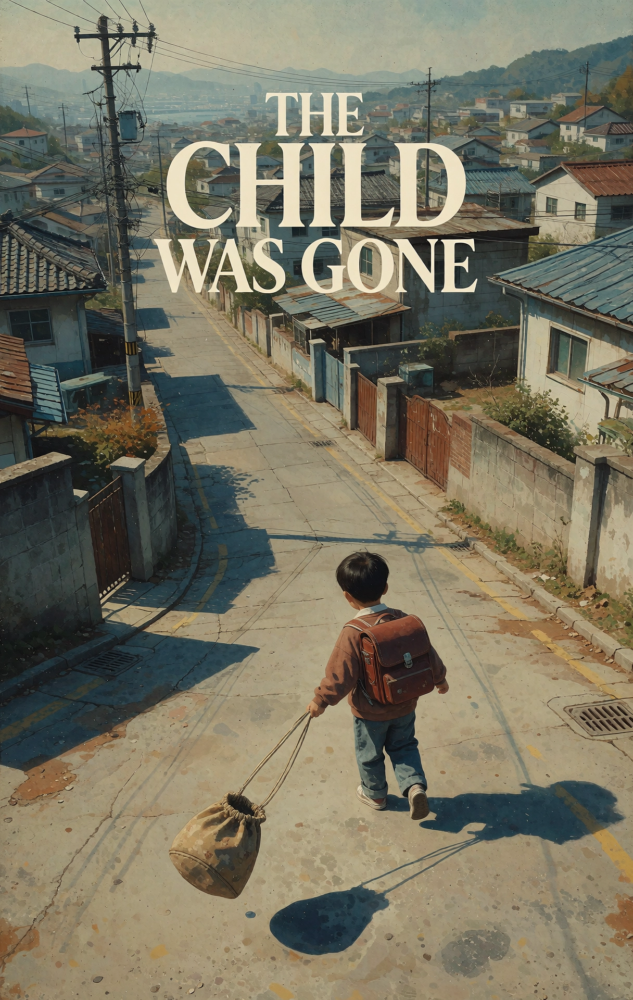
The Child Was Gone
Description
포항에서 어린 시절을 보냈던 추억을 떠올리며 그 시절의 저개발된 도시 분위기와 신발 주머니를 들고 등하교 하던 장면을 이미지로 만들었습니다. 시각적으로 레트로한 분위기를 강조했습니다.
Style: storybook illustration, kawaii character design, textured crayon and watercolor style, warm earthy color palette, minimalist white background, soft digital texture. illustration Image, Poster, digital art. A retro Korean movie poster depicting an ordinary school morning in Pohang, South Korea, in 1999. COMPOSITION: A very wide establishing shot viewed from far above and at a diagonal angle, looking down across the residential street from an elevated viewpoint. The camera is positioned substantially above the child and far away from him, so the boy occupies only a relatively small portion of the overall image. Most of the frame is occupied by the residential street, houses, walls, utility poles, overhead wires, and surrounding neighborhood. The image must clearly read as a distant high-angle view of a child within his environment, not a medium shot or close-up. Keep generous empty space in the upper portion of the poster for the title typography. The Korean elementary schoolboy is shown completely from head to the soles of his shoes, walking along the street toward school. He carries a compact, boxy late-1990s Korean elementary-school backpack on his back, with a slightly rigid rectangular body, large front flap, front pocket, simple clasp, top carrying handle, and two separate shoulder straps. He wears ordinary late-1990s Korean children's clothing: a loose sweatshirt over a simple collared shirt, relaxed straight-leg trousers, white socks, and simple low-cut sneakers. His short black hair and clothing have the ordinary appearance of a Korean elementary-school boy in 1999. He holds the two long ends of his indoor-shoe pouch's drawstring with both hands, one cord in each hand. The small pouch hangs freely below his hands. It is a simple solid-colored fabric drawstring pouch, an unstructured cloth sack used for carrying indoor shoes, with a gathered opening tightened by long cords passing through a channel around the top. While walking, he lightly taps the hanging pouch forward with the toe of one shoe. The pouch swings forward in an arc, then swings back toward him like a pendulum suspended from the long cords. He continues walking while the pouch swings and lightly taps it forward again with his foot. The pouch remains suspended in the air throughout the action and never touches the ground. CAMERA AND SPATIAL RELATIONSHIP: The boy is small within the frame and surrounded by a large amount of visible environment. The viewpoint is clearly elevated above street level and diagonally offset from the boy rather than directly behind or directly in front of him. The viewer looks down toward the street at an oblique angle, allowing the pavement, houses, walls, utility poles, and surrounding neighborhood to form a broad geometric composition around the child. Show the full length of the boy and the complete swinging pouch despite the distant viewpoint. The residential neighborhood reflects everyday Pohang in 1999: narrow paved residential roads, modest low-rise detached houses, aging concrete walls and gates, utility poles, dense overhead electrical and telephone wires, older exterior surfaces, small residential details, and the closely built lived-in appearance of a late-1990s Korean neighborhood. The environment occupies most of the image and establishes the period as strongly as the child does. POSTER DESIGN: The entire image is designed as a sophisticated printed Korean movie poster from the late 1990s. The upper third of the composition contains a clearly defined area of quieter visual space reserved for typography. Large, prominent movie-poster lettering reads exactly "THE CHILD WAS GONE" across the upper portion of the image. The title is large enough to be immediately readable and is visually separate from the background scene. The typography has elegant late-1990s Korean cinema poster sensibility, slightly condensed letterforms, generous tracking, restrained composition, and subtle physical ink texture. The title is an intentional part of the printed poster design, not a small caption or incidental text. Use a restrained retro print palette with warm off-white paper, muted navy, dusty red, subdued blue-gray, faded beige, and soft charcoal. Add subtle paper grain, fine halftone printing texture, very slight ink bleed, and minor registration imperfections. Keep the image visually sophisticated and understated rather than heavily distressed. The overall result should feel like an authentic late-1990s Korean movie poster photograph: a distant elevated view of a small child walking through an ordinary Pohang neighborhood, with the large title "THE CHILD WAS GONE" clearly dominating the upper portion of the composition.프롬프트 보기
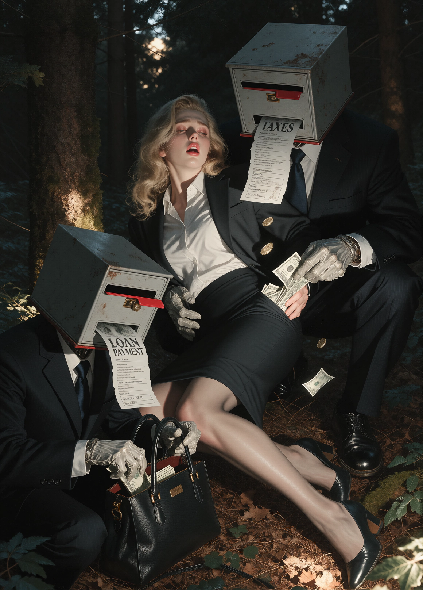
PAYDAY
Description
로컬 VLM을 사용하여 기존에 존재하는 악마에게 둘러쌓인 여성의 원본 이미지에서 역으로 프롬프트를 추출하여 회사원 여성이 우체통 모양 머리를 한 남성들에게 둘러쌓여 있는 이미지로 변경했습니다. 우체통 입구는 입이고, 튀어나온 세금 명세서와 대출 이자 명세서는 혓바닥으로 구성하여 그들이 여성의 돈을 가져가는 상황을 묘사했습니다.
masterpiece, best quality, very aesthetic. @NJSW33T. --preview. ArsMJStyle, Colored pencil hyperdetailed realism. SUBJECT A (center): A professional woman with long, wavy blonde hair and fair skin sits in a dark forest setting wearing a fitted dark blazer over a white button-up shirt, paired with a knee-length pencil skirt and simple office shoes. She holds a professional women’s handbag in her left hand while the right is resting on her thigh; she wears a slight expression of distress or surprise as her mouth is open slightly, eyes closed or half-closed, head tilted back. Her body is slumped slightly with one leg bent forward at the knee and the other extended behind her. SUBJECT B (right background): A large humanoid figure squatting behind SUBJECT A, representing TAXES, wearing a dark business suit resembling a government tax-office employee; its entire head is replaced by a flat, boxy rectangular apartment mailbox compartment with a horizontal mail slot. The character’s body has bent knees and appears to be crouching while physically supported on the forest floor. From this mailbox protrudes a long narrow sheet of paper labeled “TAXES” in large readable letters, resembling a tax bill or notice, hanging like a tongue from its slot. Its left hand is pulling several US dollar bills upward and outward from SUBJECT A’s skirt pocket; the fabric of the pocket is visibly caught halfway turned inside out as it stretches with the movement. Several loose coins are also jolted into the air around the pocket area. SUBJECT C (left foreground): A smaller humanoid figure squatting beside SUBJECT A's left side, representing LOAN PAYMENT, wearing a dark business suit resembling a bank employee or loan officer; its entire head is replaced by another flat, boxy rectangular apartment mailbox compartment with a narrow horizontal mail slot. The character’s upper body is clearly visible above the ground in a stable crouching posture with bent knees. One hand is inside SUBJECT A's open professional handbag rummaging through it while the other hand holds the bag open to search for money; its head-mounted mailbox has a long narrow sheet of paper labeled “LOAN PAYMENT” in large readable letters, resembling a loan repayment notice or monthly statement, protruding like a tongue from its slot. The TAXES character is larger and positioned behind SUBJECT A with its left arm wrapped around her right thigh while the LOAN PAYMENT character is to her left side at approximately eye level, partially occluding the forest floor beneath it. The two financial characters are in close proximity; the TAXES character’s mailbox head occupies a significant portion of the upper-right frame and appears above the woman's shoulder, while the LOAN PAYMENT character's head is lower on the left with its body slightly obscured by shadows but still clearly visible. The scene maintains a dark forest setting with tall trees behind them, dim lighting suggesting dusk or night with some sunlit patches through the canopy. The camera is positioned at approximately level height and in a frontal view, capturing the subjects from above ground level; there appears to be a slight 5-degree downward elevation angle and a minor clockwise roll of around 10 degrees as suggested by the diagonal composition formed by the characters’ positions relative to the frame’s vertical lines. The camera framing captures all three figures within a medium shot that includes their full bodies, with subjects occupying most of the frame. Lighting is cinematic: dark tones dominate the scene with selective highlights on the woman's hair and clothing and a warm glow filtering through trees above; shadows are cast by the characters onto the forest floor. The atmosphere is tense and foreboding due to the surreal nature of the tax and loan payment figures, their actions extracting money from her attire, and the dark woodland environment surrounding them.프롬프트 보기
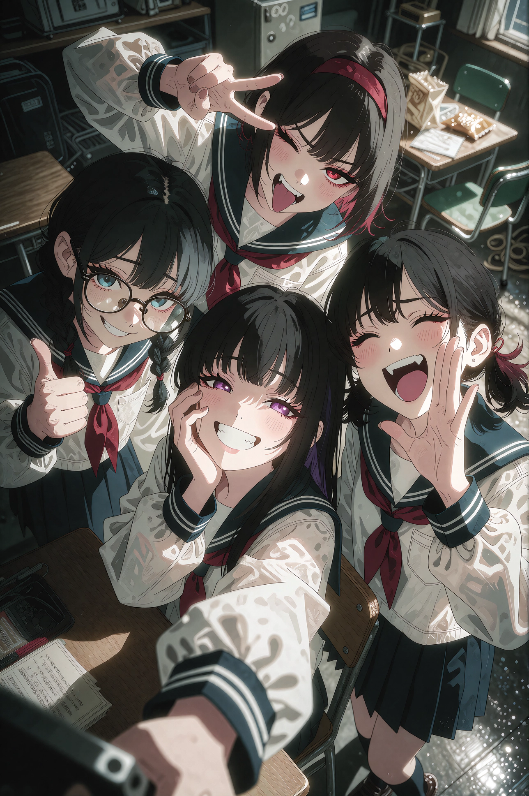
Selfie
Description
여고생들이 모여앉아서 셀카를 찍는 모습을 애니메이션 아트 스타일로 묘사했습니다. 이 이미지 생성을 통해 KREA2 프롬프트에서 인물을 나눌 때 Subject A, B, C ... 방식이 유효한지 실험해봤으며 해당 방식이 적당한 프롬프트 길이일때 효율적으로 제대로 작동하는 것을 확인했습니다.
azure youth anime art style.프롬프트 보기
Four young women in sailor uniforms pose for a selfie, captured from an overhead perspective. The image is taken at eye level with the subjects huddled closely together and looking toward the camera.
SUBJECT A (top left): A woman with side braid black hair and round glasses gives a thumbs-up gesture with her right hand while wearing a simple white sailor uniform with a dark navy sailor collar and a red sailor tie. She is smiling with her eyes slightly open and a playful eye smile. Her eye color is blue. She is in the upper-left corner, slightly above center, with her head tilted down toward the camera. She has round eyes.
SUBJECT B (top): A woman with dark hair pulled back by a red band makes a playful face—winking with one eye closed while the other eye remains clearly open, and sticking out her tongue—with her left hand raised to make a peace sign or V-sign gesture. She is positioned at the top of the frame, centered slightly above Subject C’s head. She is wearing a simple white sailor uniform with a dark navy sailor collar and a red sailor tie. She has red eyes.
SUBJECT C (center): A young woman with black long hime cut hair and bangs smiles broadly while resting her right hand against her cheek. She wears a simple white sailor uniform with a dark navy sailor collar and a red sailor tie. Her head is tilted toward the camera, facing directly forward. She has purple eyes.
SUBJECT D (right): A woman with black pigtail hair and a wide smile holds her right hand close to her mouth in a playful cheering gesture, as if enthusiastically calling out, with her palm facing inward and her fingers naturally relaxed. She is wearing a simple white sailor uniform with a dark navy sailor collar and a red sailor tie. She is positioned at the top-right, smiling directly toward the camera.
The selfie is taken from above using a downward-facing camera angle likely held by Subject C’s arm extending into the frame from the bottom center (the forearm and hand are partially visible). The group forms a tight cluster in the foreground with their heads close together.
In front of them: A typical school desk is positioned on the left side. Behind them: In the background, there’s a table with various items including papers, snacks (a beige snack bag), and a green chair to its right. Further back are more chairs, some green, in what appears to be a backstage or cafeteria area filled with equipment and personal belongings like a black backpack or case on the floor. All four subjects wear matching simple Japanese sailor-style school uniforms with clean white fabric, dark navy sailor collars, and red sailor ties. The uniforms have a classic, traditional sailor-school-uniform design with simple sleeves and a minimal appearance. The lighting appears to be from above, casting soft shadows on their faces and creating a slightly warm indoor atmosphere with no harsh contrasts. All subjects are smiling or making playful gestures for the photo. The selfie is framed such that it captures them closely together in a tight cluster, indicating they are posing as a group for fun or promotional purposes.
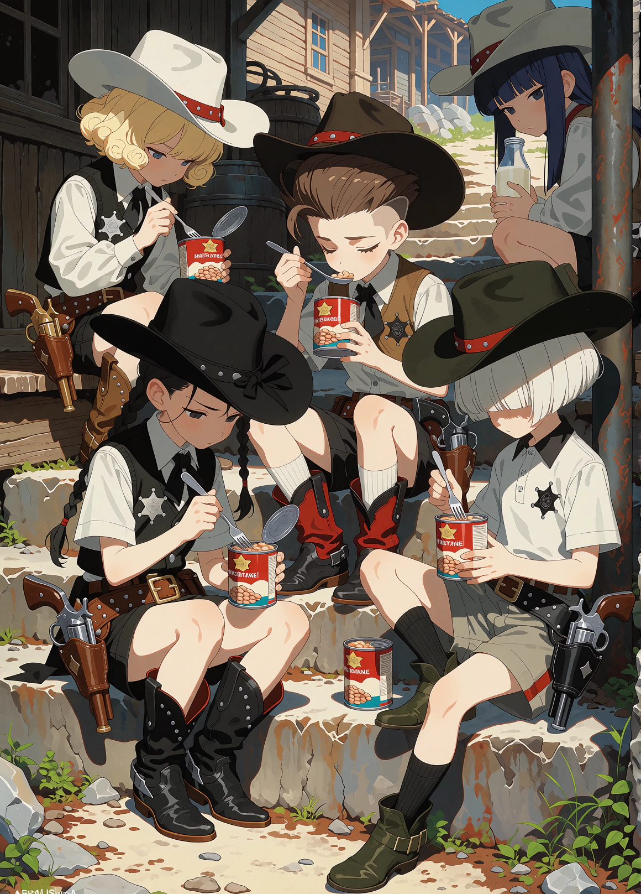
체험학습 - 카우보이 마을
Description
아이들이 카우보이 마을에 가서 체험학습 중인 모습을 애니메이션 아트 스타일로 표현했습니다. 그토록 싫어하는 콩이 담긴 통조림을 점심 식사로 받아 들고 여러가지 생각에 빠진 모습이네요.
ArsMJStyle, Colored pencil hyperdetailed realism. azure youth anime art style. All the characters are wearing sheriff badges on their right chests. Each character possesses only one revolver. Each character possesses only one sheriff badges. Describe the revolver in the holster in detail. IMPORTANT! Each character possesses only one revolver.프롬프트 보기
SUBJECT A (top left): A young boy wearing a white cowboy hat, seated on concrete steps. He is dressed in Western-style attire: a white long-sleeved shirt with dark western vest and black shorts, complete with a leather belt and a golden revolver holstered at his waist; he wears studded boots that resemble cowboy boots. His head tilts slightly down, eyes focused downward toward the can of beans he holds, which is round like a Western movie canned bean. He grips a fork in his right hand, poised to eat from it. He has blonde hair styled in a short bob perm, with soft, rounded curls forming a voluminous bob that falls evenly around his jawline, framing both sides of his face. he has blue eyes.
SUBJECT B (center left): A young boy wearing a black cowboy hat with a wide brim and a black tie-like accessory under a short-sleeved shirt. He wears a black western vest, matching shorts, and black boots. he has a black revolver holstered at his waist. Seated cross-legged on the stairs, holding a fork in his right hand while looking down at an open can of beans in his left hand. He has black hair gathered into a single long braid falling over one side of his shoulder, with the hair neatly braided from the side of his head down to the end. he has black eyes.
SUBJECT C (center): A young boy wearing a dark brown cowboy hat, seated upright and eating from a round red-canned bean container with spoon. He wears a light gray short-sleeved shirt paired with dark shorts and white socks, complemented by bright red-and-black boots. He holds the can in his left hand while using his right to eat. he has a black revolver holstered at his waist. He has brown hair styled in a regent hairstyle, with the sides and back cut short and neatly tapered, while the longer hair on top is swept upward and backward from the forehead, creating a prominent, voluminous front with a clean, structured shape. he has brown eyes.
SUBJECT D (right center): A young boy wearing a simple western-style polo shirt and gray shorts, seated on a concrete step with one leg bent up over the other, wearing black socks with dark green boots. He wears a dark green cowboy hat similar in style to others; he holds a round can of beans in his hands while looking at it, with another can nearby beside him. he has a silver revolver holstered at his waist. He has white hair in a bowl cut, with thick, straight bangs extending low over his forehead and covering his eyes, while the hair around the sides and back forms a rounded, even shape.
SUBJECT E (top right): Partially visible young boy peeking from behind a pole or post, wearing a partial view of a western-style cap and shirt, holding a bottle filled with milk, also equipped with a holster containing a silver revolver. He has dark blue hair in a long hime cut, with straight, blunt bangs cut horizontally just above his eyebrows so his eyebrows remain fully visible, while long, straight side locks frame both sides of his face. he has dark blue eyes.
SUBJECT A, SUBJECT B, SUBJECT C, SUBJECT D are all seated on wooden steps in front of a Western village setting. Subject E is slightly behind the others to their right. Subject E is squatting. Subjects A and B appear closer than Subjects C, D, and E; they sit side-by-side near the center foreground. The subjects’ shoulders touch or overlap as they sit closely together with minimal space between them. Subject E is partially occluded by a vertical pole on the far right. All wear cowboy hats, distinct cowboy attire including vests, holstered revolvers, boots, and bean cans held in their hands. Each subject has a Western-style outfit: white shirts, western vests or shorts, colorful boots; all appear to be eating canned beans with forks.
The environment depicts a Western village scene with rustic wooden buildings and stone steps as part of the architecture. The background includes weathered wooden walls, dirt paths, barrels or containers resting nearby, and distant structures resembling frontier towns. Lighting is warm daylight illumination from above, casting soft shadows under their hats and boots; highlights appear on the metallic surfaces of the revolvers’ holsters.
Camera: frontal view with approximately 5-degree upward elevation, 0 degrees roll (level frame), camera height slightly above eye level. Subject faces are toward camera or downward at food can. Camera perspective is tight medium shot focusing on subjects seated on steps; subject scale appears similar in size and proportion to one another.
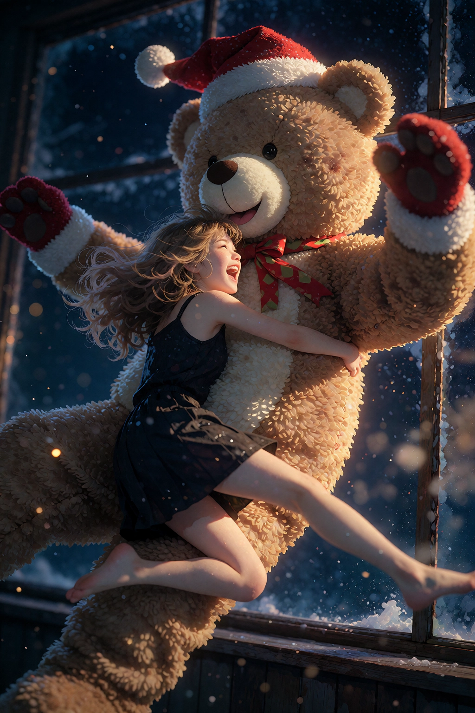
크리스마스
Description
애니메이션 토라도라의 명장면 중 하나를 KREA2를 통해 반실사 스타일로 묘사했습니다.
Style: golden hour lighting, soft focus bokeh, nostalgic anime aesthetic, warm sun-drenched atmosphere, painterly digital illustration, whimsical storytelling, volumetric light.프롬프트 보기
A dynamic, dramatic nighttime action moment in which a small teenage girl leaps through the air and hugs a person in a giant brown teddy bear costume, both suspended mid-motion in front of a dark window.
SUBJECT A (center-left, airborne): A tiny build teenage girl, a half-Japanese foreigner of high school age, with bright skin tone, long wavy blonde hair, captured in mid-jump with her entire body and both bare legs off the ground. Both of her arms wrap tightly around the teddy bear costume torso of SUBJECT B, her hands hidden behind the costume. Her face is pressed close to the bear's muzzle and turned upward, eyes squeezed shut and mouth wide open in a happy, laughing expression. She wears a black one-piece dress. Her legs extend behind her toward the lower right of the frame, with her lower body and feet partly cropped at the bottom edge.
SUBJECT B (center-right, leaning back): A man in a giant brown teddy bear costume whose body tilts backward from the impact of the girl's jump. The costume features two large rounded brown ears, a cream-colored muzzle with a black nose and a smiling mouth, and large black eyes. A red Santa hat with white trim sits on top of his head, and both of his hands wear red Santa gloves with white cuffs, one raised toward the upper right and the other reaching toward the girl's back. His chest is pressed against the girl's body as she hugs him, and his head is positioned high in the frame near the top edge. His lower body and legs are hidden behind the girl and cropped at the bottom edge.
The scene is framed at eye level with a side-view camera angle, showing the two figures close together in an active, dramatic pose. Behind them, the background is a deep dark blue night sky dotted with faint small stars, with a dark window frame of vertical mullions and a horizontal window sill running along the right side. The two figures are brightly lit against the cool, dark surroundings.
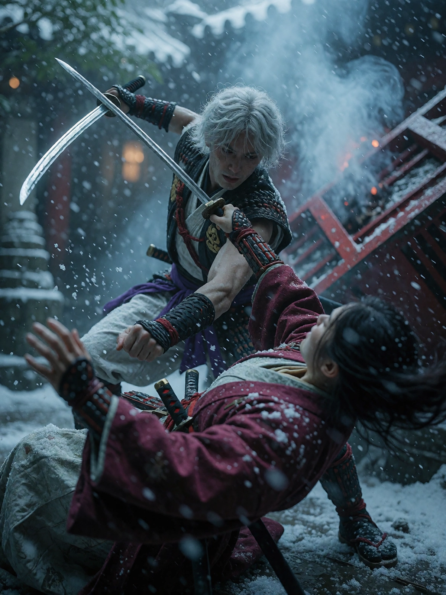
바람의 검신
Description
바람의 검신 실사영화의 한장면을 KREA2를 통해 묘사했습니다.
masterpiece, best quality, very aesthetic, n0vuschr0ma style, zy_cinematic. A low-angle, eye-level shot captures two samurai in a dynamic melee combat scene within a snowy or misty courtyard with traditional Japanese architecture. The camera is positioned to capture the action from slightly below, emphasizing motion and impact. The foreground features a male samurai with tousled, light-colored, possibly silver or blonde, messy hair, appearing young or mid-20s, in a black sleeveless vest over white trousers with purple accents at the waistband. He wears black armbands on both wrists and holds two swords: one is a katana held high above his head with its blade angled diagonally upward to the left, gripped by his right hand; the other sword is thrust downward into the air from below, extending toward the foreground, held in his left hand. His body is leaning forward with knees bent as if mid-strike or parry, and he appears focused on a target just out of frame above him. Below him, another samurai, likely female or male with long dark hair that flows backward due to motion, wears a rich maroon-red robe over lighter-colored undergarments. She is in the act of being struck, her body arched backward as if falling or being pushed back by the force of impact; her left arm is raised defensively and appears blurred from rapid movement. The male samurai's right eye gazes intently at his opponent while his face shows a determined expression with a slight frown. The other figure’s head is turned away, likely in mid-fall or evasion, with dark hair whipping toward the camera due to motion blur. Both characters are surrounded by snow-like particles suspended in air and smoke from an overturned red object resembling part of a traditional wooden structure on the right side of the frame — possibly a collapsed cart or broken shrine roof. Behind them is blurred greenery suggesting trees or bamboo, with hints of brickwork visible further back, likely representing a temple or courtyard. The lighting suggests diffuse daylight filtered through heavy mist or falling snow, casting soft highlights across surfaces without strong shadows; the color palette leans cool and muted — blues, purples, whites, and reds dominate. The depth-of-field is shallow with motion blur emphasizing the dynamic action. Motion indicates both are in combat: the foreground samurai attacks downward while his opponent reacts by falling backward or being thrown into a defensive posture. Their swords cross mid-air as if clashing — one katana blade pointing diagonally upward, the other angled down toward the ground or another object. The scene is frozen in an instant of high-tension action with clothing and hair visibly moving from forceful movement. The composition places the attacking samurai slightly off-center to the left, dominating the upper half of the frame, while his opponent occupies the lower right foreground, creating a diagonal line that suggests momentum.프롬프트 보기
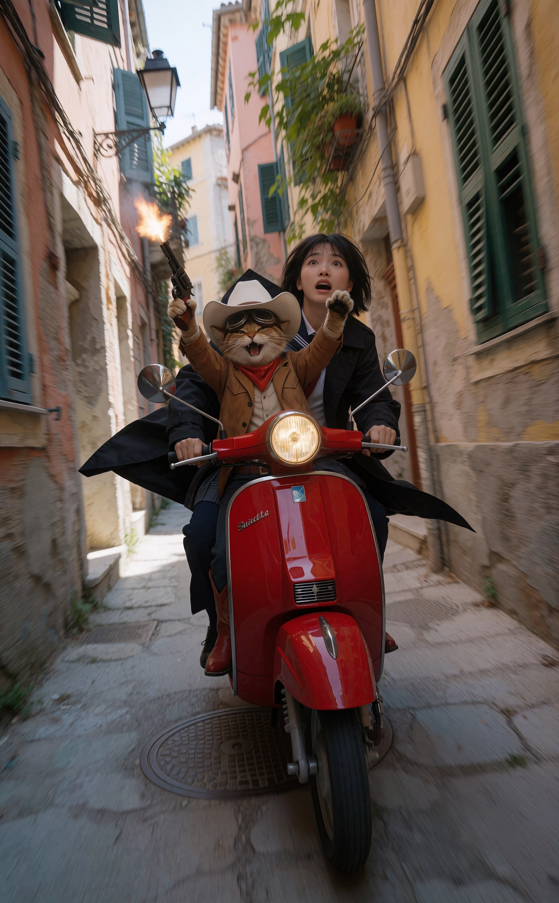
고양이 보안관과 소녀
Description
이세계로 뚝 떨어진 여고생이 고양이 보안관과 만나 추격전을 벌이고 있는 장면을 KREA2를 통해 실제 사진처럼 묘사했습니다.
realistic. Two figures are depicted in a dynamic, cinematic photograph set within a narrow urban alleyway between weathered buildings. The scene captures intense motion and surprise as a red scooter races straight toward the camera through the center of the alley, with the young woman driving and the cat riding in front of her. The scooter is traveling directly forward toward the viewer with a clear, unobstructed path ahead, safely centered between the buildings. The sense of diagonal energy comes from the scooter's sideways lean, the flowing clothing, and the composition rather than from a sideways travel direction.프롬프트 보기
SUBJECT A (upper-right / rear): A Japanese high school girl with short dark hair, wearing a Japanese high school uniform beneath a black trench coat, driving the red scooter from the rear seat. She has a startled expression with wide eyes and an open mouth, conveying shock or fear. Her head is tilted back slightly, and her face points upward toward the camera's left. Her black trench coat flares dramatically backward from the speed. She wears dark trousers. She sits directly behind SUBJECT B and leans forward to control the scooter. Both of her hands are clearly visible and firmly gripping the scooter's handlebars. The handlebars are controlled exclusively by SUBJECT A's two human hands. Her hands remain clearly separated from SUBJECT B's paws and are positioned on the left and right grips of the handlebar.
SUBJECT B (center / front): A cat wearing a classic cowboy outfit and a white cowboy hat with goggles pushed up onto its forehead, seated in front of SUBJECT A on the red scooter. The cat is a passenger and does not drive the scooter. The cat's paws are completely separate from the handlebars and never touch the steering controls. The cat has a cheerful, mischievous expression with its mouth open in an excited grin, showing small teeth. Its body leans naturally with the scooter. One front paw is raised high above its body, holding a revolver pointed upward and firing into the air, with a visible muzzle flash and a small puff of smoke from the barrel. Its other front paw is raised away from the handlebars, clearly visible and not touching any part of the steering controls. The cat wears a brown cowboy jacket, a western shirt, dark trousers, a cowboy belt, and red cowboy boots. Both front paws are clearly attached to the cat, with no cat paw gripping, touching, or overlapping the scooter's handlebars. SUBJECT B is solely a passenger.
Camera geometry: A vertical, portrait-oriented composition designed to emphasize forward motion toward the viewer. The camera is positioned ahead of the scooter on its direct path, looking back toward the approaching vehicle from a slightly elevated viewpoint. The scooter approaches the camera head-on, centered within the open space of the alley rather than moving toward either side. The scooter is visibly leaned sideways while maintaining a straight forward trajectory, creating a strong diagonal visual impression without turning toward either wall. The camera framing itself remains stable and nearly level; do not use a dutch angle. Use strong perspective and foreshortening, with the scooter's front end appearing prominent as it rapidly approaches the viewer. Keep substantial clear space between the scooter and both alley walls.
Environment: The scene takes place on a narrow street flanked by colorful, weathered European-style buildings with pastel tones and yellowish-beige walls, some showing signs of wear or peeling paint. A lantern hangs from a balcony on the left side. Shuttered windows appear above, including one green-shuttered window on the right and another blue-painted window on the far left. The alleyway is paved with stone or concrete and features a manhole cover toward the lower portion of the frame. Some foliage is visible in a planter near an upper building window. The alley remains visibly open in front of the scooter, providing a clear straight path for the approaching vehicle.
Lighting: Bright natural daylight illuminates the alley from above, with soft but directional shadows cast by the surrounding buildings and the moving subjects. The scooter and its riders are clearly illuminated against the darker recesses of the alley. Motion blur in the background, flowing clothing, and environmental shadows reinforce the sensation of rapid forward movement toward the camera.
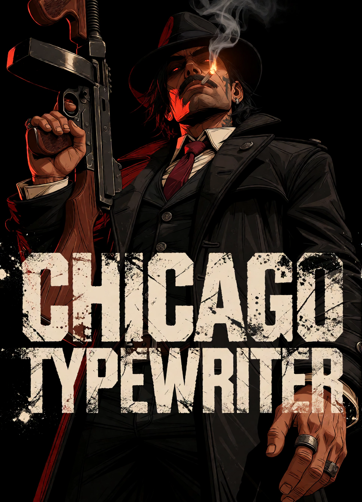
시카고 타자기
Description
1920~1930년대 미국의 금주법 시대에 알 카포네를 비롯한 시카고 지역의 악명 높은 마피아(갱스터) 조직들이 이 총을 범죄 및 조직 간의 이권 다툼(세력 싸움)에 적극적으로 사용했습니다. 원래 군용(참호전용)으로 개발되었으나 초기 비싼 가격 때문에 군대 납품이 좌절되자 민간에 먼저 풀렸고, 막강한 자금력을 가진 시카고 갱들이 이 총의 가공할 연사력을 알아보고 범죄에 애용하기 시작한 것입니다. '시카고 타자기'라는 별칭을 붙여 주었습니다. 이 외에도 총소리가 들리면 기자들이 기사를 쓰기 위해 타자기를 바쁘게 두드렸기 때문에 붙여진 이름이라는 설도 존재합니다. 마피아가 톰슨 기관총을 들고 있는 모습을 극명암의 미국 그래픽 노블 스타일로 묘사했습니다.
masterpiece, best quality, very aesthetic. ta86_inkriot, graphic cel shading, bold black outlines. A man in a black fedora and black overcoat with a white shirt and maroon tie stands against solid black background, holding a Tommy gun vertically with his right hand while smoking a cigarette in his mouth. He stares straight ahead, eyes visible through the shadow of his hat which casts a dark shape beneath it, with dramatic noir lighting: the cigarette lighter acts as a fill light on his face.프롬프트 보기
SUBJECT A (center): A man wearing a black fedora and black overcoat over a white shirt and maroon tie, has a tattoo resembling a cross near his left ear. He holds a Tommy gun vertically in his right hand, gripping it with a ringed finger; the weapon’s wooden stock and metal barrel are visible. His head is tilted slightly up and to his right, facing forward, eyes open, gaze fixed straight ahead, mouth holding a cigarette between his lips. He wears a black coat with silver buttons, has dark hair partially covered by the hat, and a thin mustache. The man’s left arm hangs at his side while his right hand grips the Tommy gun; his posture is upright but leaning slightly to his right. His silhouette appears tall, with shoulder width comparable to torso width and hip width matching waist size, arms relatively slender for his frame, fingers curled around the grip of the weapon.
Camera geometry: eye-level composition, frontal horizontal viewing angle (approximately 0 degrees), approximately level vertical viewing angle (0 degrees), no Dutch angle roll (0 degrees), camera height slightly above subject. The scene has a close-up framing with minimal crop and strong perspective distortion from depth; the man is centered in the frame.
Environment: solid black background without any elements, only the man’s silhouette against it. Lighting: dramatic noir style with shadows depicted as solid black, including the shadow beneath his hat that reveals only his eyes, while the cigarette acts as a fill light illuminating his face.
Typography overlay: the exact words "CHICAGO TYPEWRITER" appear as a large, bold neo-brutalist typographic element positioned exclusively along the lower portion of the composition. The typography is firmly anchored to the bottom of the image, forming a strong horizontal visual base beneath the character.
The lettering is extremely bold, heavy, thick, and visually dense, with massive block-like letterforms, thick strokes, a strong condensed display typeface, and a powerful graphic presence. The letters should feel substantial and weighty rather than thin or delicate. The typography is perfectly horizontal and upright, with a rigid, stable, static alignment. Do not rotate, tilt, slant, or place the text diagonally. "CHICAGO TYPEWRITER" should be large enough to span most of the lower width of the composition, creating a bold poster-like title without covering the entire image. Keep the typography concentrated in the lower area rather than extending upward through the composition. The lettering is rendered in rough, distressed white ink with a coarse tactile texture, visible grain, irregular edges, uneven ink coverage, subtle imperfections, and raw screen-print characteristics. The white lettering strongly contrasts against the solid black background. The text may overlap only the lower portion of the man's coat or silhouette where necessary, but must not obscure his face, eyes, fedora, cigarette, hands, or Tommy gun. The subject remains the primary visual focus, with the typography acting as a strong secondary graphic element at the bottom.
Exact text only: "CHICAGO TYPEWRITER". No additional text, letters, symbols, captions, decorative words, or misspellings.
AI 이미지 생성
- AI Image
- ComfyUI